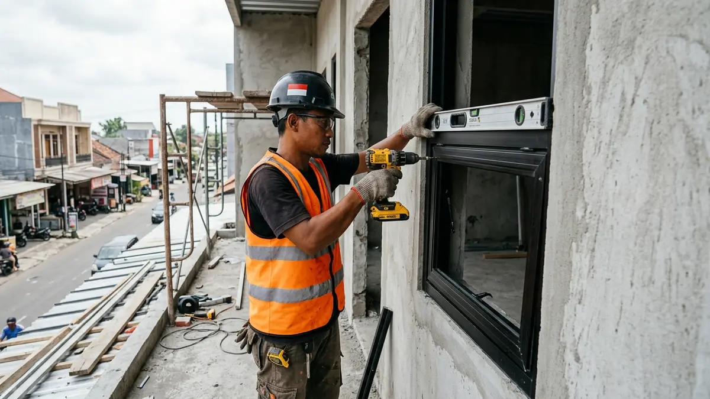

Estimasi Tabel Biaya Pasang Kusen Aluminium Ruko Per Meter Terbaru di Dau

📌 Ringkasan Inti
Menghitung anggaran kusen aluminium untuk ruko komersial di kawasan strategis Dau Malang memerlukan pemahaman menyeluruh terhadap komponen material, kaca, dan ongkos teknisi:
- Harga per meter lari kusen aluminium mencakup bahan profil aluminium, aksesori kunci, dan aplikasi sealant silikon.
- Upah tukang pasang di Dau umumnya dihitung terpisah dari harga bahan atau dengan sistem borongan per titik bukaan.
- Ruko dua lantai membutuhkan perhitungan meter lari lebih banyak dibanding rumah tinggal karena bukaan etalase lantai 1 dan jendela lantai 2.
- Jenis kaca yang dipilih (kaca polos, kaca tempered, atau kaca riben) turut memengaruhi total biaya akhir proyek.
- Simulasi biaya sebaiknya dikonfirmasi ulang ke toko atau aplikator aluminium setempat sebelum pengerjaan dimulai.
- Apa Itu Harga Pasang Kusen Aluminium Per Meter
- Apa Saja Komponen Biaya Pasang Kusen Aluminium Ruko
- Berapa Kisaran Harga Pasang Kusen Aluminium Per Meter Di Dau
- Tabel Simulasi Biaya Ruko Dua Lantai
- Bagaimana Simulasi Biaya Untuk Ruko Dua Lantai Di Dau
- Kesalahan Umum Saat Menghitung Biaya Pasang Kusen Aluminium
- Kesimpulan Praktis
Mencari informasi harga pasang kusen aluminium dau menjadi prioritas para pemilik unit usaha, investor ruko dua lantai, maupun kontraktor yang tengah membangun deretan ruko komersial di kawasan Dau Kabupaten Malang. Memahami perhitungan harga per meter lari dan upah tukang pasang secara transparan akan membantu menghindari lonjakan anggaran tak terduga.
Biaya pasang kusen aluminium ruko di Dau umumnya dihitung per meter lari, mencakup bahan aluminium, kaca, dan upah tukang. Total biaya dapat bervariasi tergantung ketebalan profil, jenis kaca, dan tingkat kesulitan pemasangan di lapangan.
Apa Itu Harga Pasang Kusen Aluminium Per Meter
Harga pasang kusen aluminium per meter adalah biaya yang dihitung berdasarkan panjang total profil aluminium yang dipasang, biasa disebut meter lari (m1). Sistem ini umum digunakan karena bukaan jendela dan pintu pada tiap bangunan ruko memiliki ukuran dan desain bentang yang berbeda-beda.
Untuk ruko di Dau, perhitungan meter lari biasanya mencakup kusen jendela, pintu geser/swing, dan partisi kaca etalase jika ada. Harga per meter umumnya sudah termasuk bahan aluminium dan kaca standar, namun aksesori tambahan seperti kunci khusus, floor hinge, atau kaca tempered dapat menambah biaya total RAB.

Apa Saja Komponen Biaya Pasang Kusen Aluminium Ruko
Komponen biaya utama terdiri dari bahan aluminium, kaca, aksesori kunci dan engsel, sealant, serta upah tukang pemasangan. Setiap komponen ini berkontribusi pada total biaya akhir proyek ruko Anda di Dau.
Bahan aluminium menjadi komponen terbesar, dengan variasi harga tergantung merk (seperti Alexindo, Dacon, Inkalum, atau YKK AP) dan ketebalan profil 3 inch atau 4 inch. Kaca turut memengaruhi biaya, di mana kaca polos 5mm umumnya lebih terjangkau dibanding kaca tempered 8mm/10mm atau kaca riben rayban penahan silau matahari. Aksesori seperti engsel, handle, dan kunci biasanya dihitung per unit, bukan per meter.
Upah tukang pasang di Dau umumnya dihitung terpisah, baik per meter lari maupun borongan per titik bukaan. Sealant silikon netral berkualitas tinggi untuk mencegah kebocoran juga perlu dianggarkan, terutama pada sambungan kusen dengan plesteran tembok bagian luar yang langsung terpapar cuaca.
Paket Fabrikasi & Pasang Kusen Aluminium Ruko Dau
Layanan pembuatan fasad kaca ruko, pintu etalase aluminium, partisi kantor, dan jendela casement ruko 2-3 lantai di kawasan Dau Malang dengan garansi resmi dan survei gratis.
Berapa Kisaran Harga Pasang Kusen Aluminium Per Meter Di Dau
Kisaran harga pasang kusen aluminium per meter di Dau umumnya bervariasi tergantung ketebalan profil dan jenis kaca yang digunakan. Kusen dengan profil standar 3 inch dan kaca polos cenderung berada di kisaran harga yang lebih terjangkau dibanding kusen premium 4 inch dengan kaca tempered tebal.
Sebagai gambaran umum, semakin tebal profil aluminium dan semakin tinggi spesifikasi kaca pengaman, semakin besar pula biaya per meter larinya. Perbedaan harga antar toko aluminium di Dau juga dapat dipengaruhi oleh jarak pengiriman bahan dan kelengkapan garansi pekerjaan yang diberikan oleh aplikator.
Tabel Simulasi Biaya Ruko Dua Lantai
| Komponen | Estimasi Kebutuhan | Catatan |
|---|---|---|
| Kusen jendela lantai 1 dan 2 | Sesuai jumlah dan ukuran bukaan | Dihitung per meter lari profil |
| Kusen pintu utama dan samping | Sesuai jumlah pintu geser / swing | Termasuk aksesori handle & kunci |
| Kaca standar atau tempered | Sesuai luas kaca terpasang (m2) | Kaca tempered menambah keamanan display |
| Sealant dan aksesori tambahan | Sesuai jumlah sambungan kusen-tembok | Penting untuk mencegah kebocoran air hujan |
| Upah tukang pasang | Sesuai kesepakatan borongan / meter lari | Sebaiknya disepakati tertulis dalam SPK |
*Catatan: Rincian tabel bersifat kerangka simulasi umum, bukan harga mutlak, dan perlu dikonfirmasi langsung ke penyedia jasa aplikator di Dau melalui survei lokasi presisi.
Bagaimana Simulasi Biaya Untuk Ruko Dua Lantai Di Dau
Simulasi biaya ruko dua lantai umumnya dimulai dari menghitung total meter lari seluruh bukaan jendela dan pintu di kedua lantai. Setelah itu, biaya bahan dikalikan dengan harga per meter, kemudian ditambah biaya kaca dan upah pasang teknisi.
Untuk ruko dengan banyak bukaan jendela di lantai dua sebagai sumber pencahayaan alami dan sirkulasi kantor, kebutuhan meter lari biasanya lebih besar dibanding lantai satu yang umumnya didominasi pintu folding kaca atau rolling display utama. Pemilik ruko disarankan meminta rincian tertulis dari toko aluminium agar simulasi biaya lebih akurat sesuai rancangan gambar kerja arsitek.
"Pada bangunan ruko komersial, jangan sekali-kali mengorbankan kualitas ketebalan kusen dan sealant silikon demi menekan biaya di awal. Ruko yang terpapar panas terik dan hujan deras di jalur lalu lintas Dau membutuhkan profil aluminium minimal 1.15 mm dan sealant non-asam agar tidak rembes dan tidak getas dalam hitungan bulan."
Kesalahan Umum Saat Menghitung Biaya Pasang Kusen Aluminium
Kesalahan umum yang sering terjadi adalah hanya menghitung harga bahan tanpa memasukkan biaya upah tukang dan sealant, sehingga total biaya membengkak saat pengerjaan di lapangan. Kesalahan lain adalah tidak mengukur ulang bukaan secara presisi setelah plester aci dinding selesai sebelum memesan bahan ke workshop.
Sebagian pemilik ruko juga sering melewatkan negosiasi garansi pemasangan, padahal garansi tertulis penting untuk mengantisipasi masalah seperti kebocoran pada sambungan kusen atau handel pintu yang macet setelah ruko mulai dioperasikan tenant.
Kesimpulan Praktis
Biaya pasang kusen aluminium ruko di Dau dipengaruhi oleh ketebalan profil, jenis kaca, dan upah tukang, bukan hanya harga bahan aluminium saja. Selalu minta rincian tertulis dan simulasi biaya sebelum memulai pengerjaan, terutama untuk ruko dua lantai dengan banyak bukaan etalase.
Pertanyaan Seputar Biaya Kusen Ruko Dau
Umumnya sudah termasuk kaca standar, namun kaca tempered atau kaca khusus biasanya dihitung terpisah sebagai biaya tambahan.
Keduanya umum digunakan di Dau, tergantung kesepakatan antara pemilik ruko dan penyedia jasa pemasangan.
Minta rincian tertulis mencakup bahan, kaca, aksesori, sealant, dan upah tukang sebelum pekerjaan dimulai agar tidak ada biaya tambahan di luar kesepakatan.